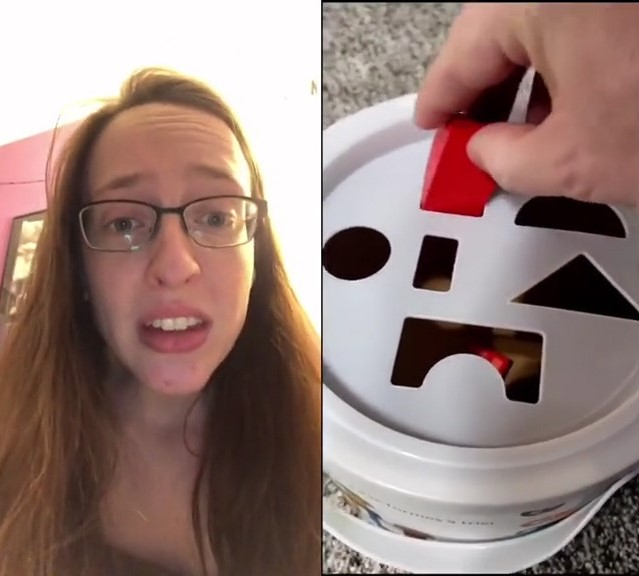
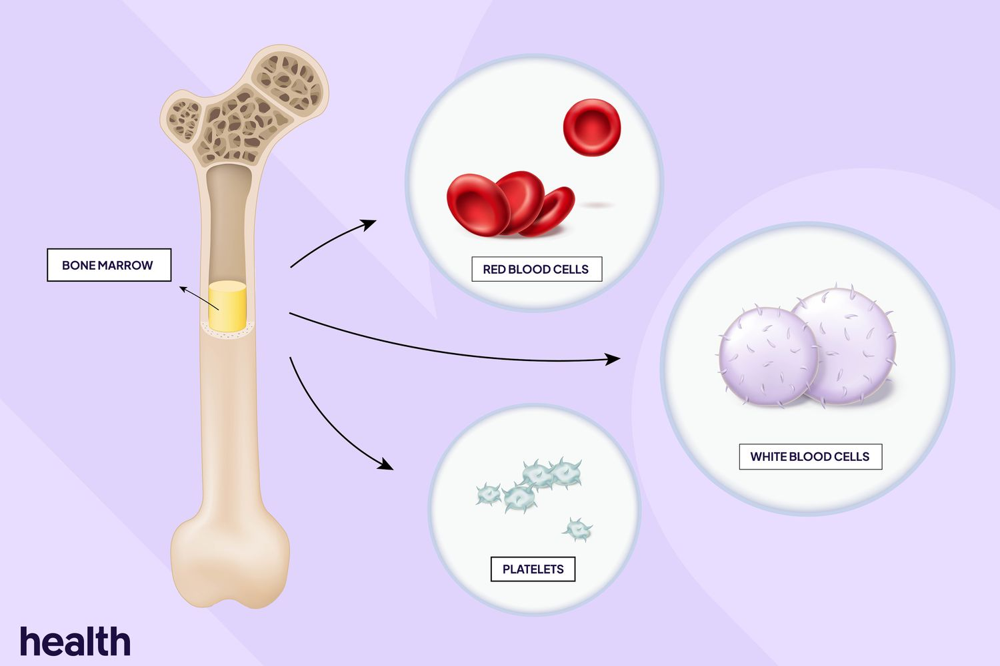
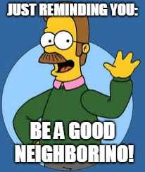
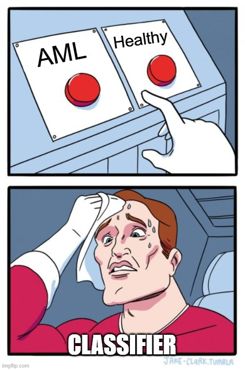
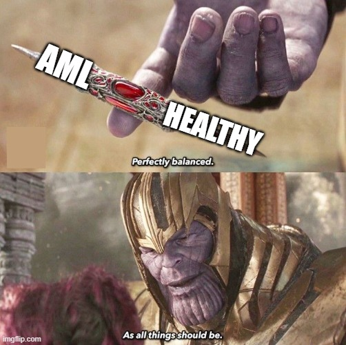

Sesión de laboratorio 4: Problemas de Clasificación
Objetivos de la sesión
🎯 Objetivo general: Aprender a plantear y evaluar problemas de clasificación, desarrollando modelos que no solo alcancen buena precisión, sino que también ofrezcan información sobre los patrones que separan los grupos de interés.

La clasificación es una de las tareas más utilizadas en el aprendizaje automático, especialmente en la investigación biomédica y clínica. A diferencia de la regresión, donde predecimos un resultado continuo, aquí el objetivo es asignar cada observación a una categoría discreta. Este cambio de perspectiva lo cambia todo: desde el tipo de algoritmos que utilizamos, hasta cómo evaluamos el éxito, y las consecuencias de diferentes tipos de errores. Un modelo que clasifica erróneamente la condición de un paciente, por ejemplo, tiene una implicación muy diferente a la de un modelo que subestima ligeramente un biomarcador continuo.
Las buenas canalizaciones de clasificación requieren una cuidadosa reflexión sobre el equilibrio de clases, la elección de características y la compensación entre sensibilidad y especificidad. Incluso los modelos altamente precisos pueden ser engañosos si se sobreajustan a los artefactos en los datos o si no logran generalizar más allá de la cohorte de entrenamiento. La evaluación, por lo tanto, exige más que una sola métrica: la precisión, la recuperación, la puntuación F1 y las matrices de confusión proporcionan perspectivas complementarias sobre el rendimiento. Esta sesión cultivará una intuición para estos problemas, mostrando cómo se comportan los diferentes algoritmos en diversas condiciones y cómo las estrategias de validación adecuadas nos ayudan a juzgar la fiabilidad de nuestros resultados.
Actividades propuestas
En esta sesión trabajaremos con el conjunto de datos Células mononucleares de médula ósea con AML, disponible directamente en los conjuntos de datos de widgets de Orange. Esta colección contiene perfiles genómicos de células individuales de médula ósea, algunas de las cuales provienen de pacientes con leucemia mieloide aguda (AML) y otras de donantes sanos. La tarea es clasificar si cada célula pertenece al grupo de AML o al grupo de control sano en función de su perfil de expresión.

Este conjunto de datos ilustra varios desafíos centrales de la clasificación biomédica: datos de alta dimensión, variabilidad biológica y la necesidad de reglas de decisión interpretables. Al cargarlo en Orange, seleccionar la variable objetivo correcta (tipo de célula: AML vs. sano) y conectarlo con aprendices de clasificación, explorarás el rendimiento de algoritmos comunes como la regresión logística y los vecinos más cercanos (k-NN). También investigaremos cómo el desequilibrio de clases afecta el comportamiento del modelo y por qué la validación cruzada es esencial para obtener una estimación justa de la precisión predictiva.
A través de estas actividades, desarrollarás una comprensión práctica de cómo diseñar, entrenar y evaluar modelos de clasificación en entornos donde tanto la precisión como la interpretabilidad son importantes.
1. Preparar los datos
🎯 Objetivo: Comprender el conjunto de datos y prepararlo para la clasificación.
En esta primera parte cargaremos el conjunto de datos y realizaremos una exploración y preprocesamiento inicial. Esto incluye comprobar valores faltantes, entender la distribución de las clases y visualizar los datos. Asegúrate de configurar correctamente la variable objetivo para indicar si cada célula proviene de un paciente con AML o de un donante sano.
Divide los datos en conjuntos de entrenamiento y prueba, manteniendo el mismo porcentaje de muestras en cada subconjunto y estratificando por la variable objetivo. Esto nos ayudará a evaluar el rendimiento del modelo con mayor precisión más adelante. Visualiza las muestras y cómo están distribuidas.
📝 Preguntas:
- ¿Cuántas muestras hay en cada clase (AML vs. sano)? ¿Está el conjunto de datos equilibrado o desequilibrado?
- ¿Qué información obtuviste de la visualización inicial de los datos?
- Basándote en tu exploración, ¿crees que necesitamos hacer algún preprocesamiento adicional?
2. Métodos de clasificación
🎯 Objetivo: Aprender qué son los métodos de clasificación y qué información aprenden.
Los algoritmos de clasificación aprenden a asignar etiquetas a los puntos de datos en función de sus características. A diferencia de la regresión, que predice resultados continuos, la clasificación se ocupa de categorías discretas. En esta parte, exploraremos dos algoritmos de clasificación fundamentales: regresión logística y k-vecinos más cercanos (k-NN). Entrenaremos estos modelos en el conjunto de entrenamiento y evaluaremos su rendimiento en el conjunto de prueba.
2.1 Regresión Logística
La semana pasada vimos cómo usar la regresión lineal para predecir resultados continuos. Ahora, exploraremos la regresión logística, que se utiliza para tareas de clasificación. La regresión logística modela la probabilidad de un resultado binario en función de una o más variables predictoras. Si la comparamos con la regresión lineal, podemos ver que mientras la regresión lineal predice un valor continuo, la regresión logística predice la probabilidad de pertenencia a una clase (por ejemplo, la probabilidad de estar en el grupo AML). La ecuación para la regresión logística es: \[ P(Y=1|X) = \frac{1}{1 + e^{-(w_0 + X_1 w_1 + ... + X_n w_n)}}, \]
donde \(P(Y=1|X)\) es la probabilidad de la clase positiva (por ejemplo, AML), \(w_0\) es la intersección, \(X_i\) son las variables predictoras y \(w_i\) son los coeficientes.
En esta parte, conectarás los datos de entrenamiento a un widget de Logistic Regression en Orange, configurarás sus parámetros y entrenarás el modelo. Luego, conectarás el modelo entrenado a un widget de Bar Plot para visualizar los coeficientes del modelo. Esto te ayudará a entender qué características son más influyentes en la predicción de la clase.
📝 Preguntas:
- ¿Cómo difiere la regresión logística de la regresión lineal?
- ¿Cuáles son algunas ventajas de usar la regresión logística para tareas de clasificación?
- ¿Cómo podemos interpretar los coeficientes de un modelo de regresión logística?
2.2 k-vecinos más cercanos (k-NN)

A continuación, exploraremos el algoritmo de k-vecinos más cercanos (k-NN), que es un método de clasificación sencillo pero efectivo. El algoritmo k-NN clasifica un nuevo punto de datos en función de la clase mayoritaria de sus ‘k’ vecinos más próximos en el conjunto de entrenamiento. Es un método no paramétrico, lo que significa que no hace supuestos sobre la distribución subyacente de los datos. La elección de ‘k’ (el número de vecinos a considerar) puede afectar significativamente el rendimiento del modelo. Un ‘k’ pequeño puede llevar a sobreajuste, mientras que un ‘k’ grande puede suavizar en exceso la frontera de decisión.Usa el widget Scatter Plot para visualizar cómo se distribuyen los puntos de entrenamiento respecto a las variables HBB y HBD. No es necesario conectar la salida del widget de k-NN al Scatter Plot (ya que k-NN es no paramétrico); conecta únicamente los datos de entrenamiento . Colorea los puntos según la variable objetivo (tipo de célula: AML vs. sano) para ver qué tan separadas están las clases en este espacio 2D.
📝 Preguntas:
- ¿En qué se diferencia k-NN de la regresión logística?
- ¿Cuáles son algunas ventajas de usar k-NN para tareas de clasificación?
- ¿Qué puedes observar sobre la distribución de puntos en el diagrama de dispersión? ¿Cómo se relaciona esto con el rendimiento del modelo k-NN?
3. Visualización de fronteras de decisión
🎯 Objetivo: Entender qué son las fronteras de decisión y cómo visualizarlas.

Las fronteras de decisión son las superficies que separan diferentes clases en el espacio de características. Representan los puntos donde el modelo no está seguro sobre la etiqueta de clase, lo que significa que un pequeño cambio en las características de entrada podría llevar a una clasificación diferente. Entender las fronteras de decisión es crucial para interpretar cómo un modelo de clasificación toma decisiones y para identificar áreas potenciales de mala clasificación.Vamos a utilizar un complemento llamado Educational para visualizar la frontera de decisión del modelo de regresión logística. Esto nos ayudará a entender cómo el modelo separa las dos clases en función de las características. Para instalar el complemento, ve a Options > Add-ons en Orange y selecciona Educational de la lista. Una vez instalado, puedes encontrar el widget Polynomial Classification en la sección Educational de la caja de herramientas. Una vez que hayas entrenado los modelos de clasificación, conecta cada uno de ellos a un widget Polynomial Classification junto con los datos de prueba para visualizar la frontera de decisión. Puedes configurar el widget para mostrar la frontera de decisión para diferentes pares de características, como HBB y HBD.
📝 Preguntas:
- ¿Qué son las fronteras de decisión y por qué son importantes en las tareas de clasificación?
- ¿Cómo puede la visualización de las fronteras de decisión ayudarnos a entender el rendimiento del modelo?
- ¿Qué desafíos podrían surgir al visualizar las fronteras de decisión en espacios de alta dimensión?
4. Evaluación del modelo
🎯 Objetivo: Aprender a evaluar modelos de clasificación utilizando métricas apropiadas.
Al igual que con los modelos de regresión, evaluar los modelos de clasificación es crucial para entender su rendimiento. Sin embargo, las métricas utilizadas para la clasificación son diferentes de las utilizadas para la regresión. En la clasificación, utilizamos métricas que consideran la naturaleza discreta de los resultados. Estas se derivan típicamente de la matriz de confusión, que resume los recuentos de muestras correctamente predichas como positivas (verdaderos positivos), correctamente predichas como negativas (verdaderos negativos), incorrectamente predichas como positivas (falsos positivos) e incorrectamente predichas como negativas (falsos negativos).
Algunas métricas comunes incluyen:
- Matriz de Confusión: Una tabla que resume el rendimiento de un modelo de clasificación mostrando los recuentos de predicciones verdaderas positivas, verdaderas negativas, falsas positivas y falsas negativas.
- Precisión (Accuracy): La proporción de instancias clasificadas correctamente sobre el total de instancias. \[ \text{Accuracy} = \frac{\text{True Positives} + \text{True Negatives}}{\text{Total Instances}} \]
- Precisión (Precision): La proporción de predicciones verdaderas positivas sobre todas las predicciones positivas realizadas por el modelo. \[ \text{Precision} = \frac{\text{True Positives}}{\text{True Positives} + \text{False Positives}} \]
- Recall (Sensibilidad): La proporción de predicciones verdaderas positivas sobre todas las instancias positivas reales. \[ \text{Recall} = \frac{\text{True Positives}}{\text{True Positives} + \text{False Negatives}} \]
- F1 Score: La media armónica de la precisión y el recall, proporcionando una única métrica que equilibra ambas. \[ \text{F1 Score} = 2 \times \frac{\text{Precision} \times \text{Recall}}{\text{Precision} + \text{Recall}} \]
Para evaluar los modelos, conecta los datos de prueba y los modelos entrenados a un widget de Predicciones en Orange. Este widget calculará varias métricas de evaluación para cada modelo, lo que te permitirá comparar su rendimiento.
Además, puedes utilizar el widget de Confusion Matrix para visualizar la matriz de confusión de cada modelo. Para hacer esto, primero debes conectar los datos de prueba y los modelos entrenados a un widget de Predictions, y luego conectar la salida del widget de Predictions al widget de Confusion Matrix.
📝 Preguntas:
- ¿Cuáles son las principales diferencias entre las métricas de evaluación para regresión y clasificación?
- ¿Por qué es importante considerar múltiples métricas al evaluar modelos de clasificación?
- Basado en los resultados de la evaluación, ¿qué modelo tuvo un mejor rendimiento y por qué?
5. Desbalanceo de datos
🎯 Objetivo: Aprender a manejar conjuntos de datos desbalanceados en tareas de clasificación.

El desbalanceo de clases ocurre cuando las clases en un conjunto de datos no están representadas por igual. Por ejemplo, en un conjunto de diagnóstico médico puede haber muchos más pacientes sanos que pacientes con una enfermedad específica. Este desbalanceo puede conducir a modelos sesgados que funcionan bien en la clase mayoritaria pero mal en la clase minoritaria. Para abordar el desbalanceo de clases, podemos emplear técnicas como sobremuestreo de la clase minoritaria, submuestreo de la clase mayoritaria o métodos de generación sintética como SMOTE (Synthetic Minority Over-sampling Technique).Dado que este conjunto de datos está casi perfectamente equilibrado, simularemos un escenario desequilibrado. Para ello, conecta los datos de entrenamiento a un widget Select Rows en Orange. Configura el widget para usar solo las muestras con un valor de HBG1 mayor que 0. Visualiza la distribución de clases con un widget Distributions para confirmar el desbalanceo.
Después de crear el conjunto desequilibrado, reentrena los modelos de regresión logística y k-NN usando este nuevo conjunto de entrenamiento. A continuación, evalúa su rendimiento en el conjunto de prueba original utilizando los widgets Predictions y Confusion Matrix. Compara los resultados con los obtenidos en el conjunto equilibrado.
📝 Preguntas:
- ¿Qué cambios observaste en el rendimiento del modelo tras introducir el desequilibrio de clases?
- ¿Cómo puedes mitigar los efectos del desequilibrio en tus modelos?
Mini-proyecto: Clasificación con datos desbalanceados
En este mini-proyecto, aplicarás lo que has aprendido sobre clasificación, métricas de evaluación y estrategias para manejar el desbalanceo de clases.
Imagina que estás colaborando con una startup fintech que desarrolla herramientas para detectar transacciones fraudulentas. El equipo te proporciona el conjunto de datos Credit Card Fraud Detection (disponible en el siguiente enlace). Contiene características anonimizadas derivadas de transacciones con tarjeta de crédito realizadas en septiembre de 2013 por titulares de tarjetas europeos. Entre las 284,807 transacciones, solo 492 son fraudulentas, menos del 0.2% de los datos. La variable objetivo (Class) indica si una transacción es fraudulenta (1) o legítima (0).
La primera impresión nos dice que este es un problema típico de clasificación binaria, pero el desequilibrio extremo de clases crea desafíos serios. Un clasificador ingenuo que predice “legítimo” para todos los casos lograría más del 99% de precisión, pero sería inútil en la práctica. Este proyecto te ayudará a ver por qué la precisión por sí sola no es suficiente y por qué métricas como la precisión, el recall, la puntuación F1 y la curva ROC son esenciales para evaluar el rendimiento en tales contextos.
Tu tarea es diseñar un flujo de trabajo en Orange que aborde este problema. Debes cargar y explorar el conjunto de datos, examinar la distribución de las clases objetivo y luego construir y comparar modelos de clasificación como regresión logística, bosques aleatorios y máquinas de soporte vectorial. Parte de tu trabajo será considerar estrategias para abordar el desbalanceo de clases, como el re-muestreo, el ajuste de los umbrales de clasificación o el enfoque en métricas de evaluación sensibles al costo.
Una vez que tus modelos estén entrenados y validados, reflexiona sobre cómo el desbalanceo de clases influyó en tus decisiones, qué métricas capturaron mejor el rendimiento del modelo y si priorizarías detectar tantos casos de fraude como fuera posible (alto recall) o evitar falsas alarmas (alta precisión).
Al igual que en proyectos anteriores, no hay un único flujo de trabajo correcto. Diferentes flujos de trabajo pueden dar lugar a diferentes compensaciones, y lo que más importa es que puedas explicar y justificar tus elecciones de diseño.
Nota final
✨ ¡Felicidades por completar el Laboratorio 4! Has explorado los fundamentos de los problemas de clasificación, incluyendo el manejo de conjuntos de datos desbalanceados, la evaluación del rendimiento del modelo y la aplicación de diferentes algoritmos para mejorar la precisión de clasificación.
En la próxima sesión, profundizaremos en las técnicas de agrupamiento, que nos permitirán agrupar puntos de datos similares sin etiquetas predefinidas. Esto mejorará aún más tu comprensión de los métodos de aprendizaje no supervisado y sus aplicaciones en varios dominios.
📤 Cómo entregar
- Guarda/exporta tu informe completado como PDF.
- Renombra el archivo PDF siguiendo la convención de abajo.
- Ve a Aula Global → esta asignatura → Tareas → buzón de entrega “Lab 4”, y sube el PDF antes de la fecha límite.
- Adjunta también tu archivo de flujo de trabajo de Orange (.ows, guardado con Archivo > Guardar como… en Orange) en la misma entrega.
Nombre del archivo: Lab4_Apellido_Nombre.pdf (ej. Lab4_Garcia_Maria.pdf)